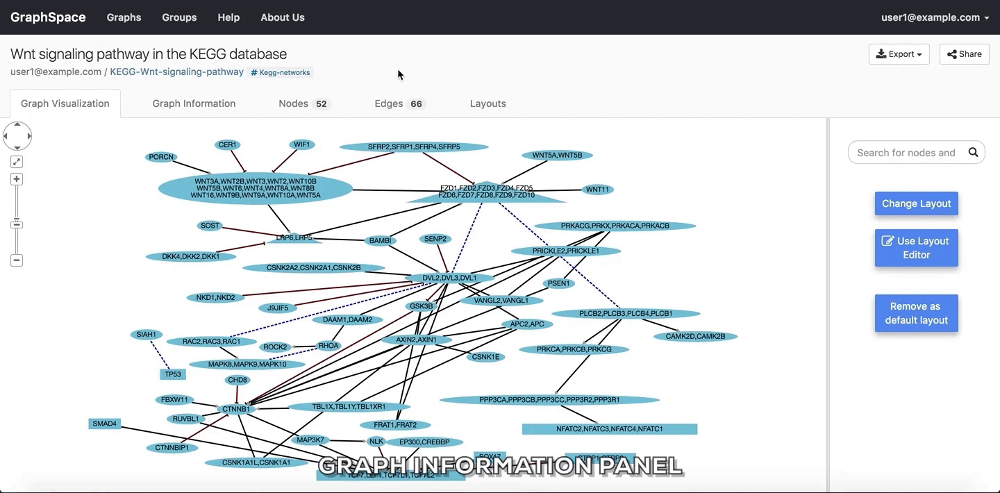

2. Quick Tour of Cytoscape¶
2.1. Welcome Screen¶
The welcome page greets a user when the user visits GraphSpace. The Welcome Screen is designed to access commonly used features of GraphSpace like:
- Log In
- Create Account
- Upload a graph
- List of uploaded graphs.
2.1.1. Log In¶
The user can log-in to GraphSpace by following the given steps:
- Click on the
Log Inbutton on the top navigation bar. This will trigger a log-in window/pop-up to be displayed. - Enter your email address.
- Enter you password.
- Click on
Submitbutton to log in with the given email address. - If you have forgotten you password, click on the
Forgot Passwordlink.

2.1.2. Create Account¶
The user can create an account on GraphSpace by following the given steps:
- Click on the
Create Accountbutton on the top navigation bar. This will trigger a create account window/pop-up to be displayed. - Enter the your email address.
- Enter a password for your account.
- Verify your password by entering the same password again.
- Click on
Submitbutton to create the account with the given email address and password.

2.1.3. Upload a graph¶
The user can upload a graph on GraphSpace by following the given steps:
- Go to the Upload Graph Page by clicking on the
Upload Graphbutton on Home Page. - Enter a unique name for the new graph.
- Select a CYJS file which contains the graph information.
- Select a JSON file which contains the style information for the graph. (Optional Step)
- Click on
Submitbutton to upload the graph using the selected files. - Once the graph has been uploaded, GraphSpace will provide a unique URL through which the user may interact with the graph represented by the uploaded files.

2.1.4. List of uploaded graphs¶
The user can go to a page that lists the graphs accessible by the user on GraphSpace by following the given steps:
Click on the button titled
Graphson the top navigation bar.OR
Click on the
My Graphsbutton on the Home Page.
In this example, the user owns 33 graphs, can access 64 public graphs and 33 graphs are shared with this user.

2.2. Searching within Multiple Graphs¶
The user can search for graph with a given name or node or an edge on Graphs Page by following the given steps:
- Enter the name of the graph, node or an edge you are searching for in the search bar.
- Press
Enterkey or click on theSearchbutton.
In this example, the user searches for the list for graphs that contain the protein (node) CTNNB1 (the symbol for β-catenin, a transcriptional regulator in the Wnt signaling pathway). The reduced list of graphs are the graphs where proteins names/labels (nodes) contain CTNNB1 as a substring. In the following example, There are six graphs owned by the user and thirty-two public graphs that contain this protein. Each link in the Graph Name column will take the user to a specific graph with the search term highlighted. In this example, the user clicks on the graph with the name KEGG-Wnt-signaling-pathway and reaches the graph for the Wnt pathway with the searched node highlighted.

2.3. Searching within a Single Graph¶
The user can search for node or edges within a given graph on GraphSpace by following the given steps:
- Enter the name of the node or an edge you are searching for in the search bar.
- The nodes or edges are highlighted automatically as you type in the name of the node or edge in the search bar.
In the following example, the user searches for the graph for two proteins (nodes) CTNNB1 and WNT using the query ctnnb1, wnt. This search query highlights the proteins where protein (node) name/label contains CTNNB1 or WNT as a substring (case-insensitive). In the following example, the graph contains four nodes which match the given query.

In the following example, the user searches for the graph for edges from Wnt to Fzd using the query Wnt:Fzd. This search query highlights any protein-protien interaction (edge) where tail node name or label contains Wnt as a substring and head node name or label contains Fzd as a substring. In the following example, the graph contains three edges which match the given query.

2.4. Interacting with a Graph¶
The Graph Page is designed to access features like:
- Graph Information
- Edge and Node Information
- Export Graph
- Change Layout
- Share Layout
2.4.1. Graph Information¶
As its name suggests, the Graph Information panel displays information about the entire graph, e.g., a legend of node and edge shapes and colors. The user can go to Graph Information panel by clicking on the Graph Information link above the graph. The information that appears in Graph Information panel must be included in the JSON for the graph uploaded by the user using the RESTful API.

2.4.2. Edge and Node Information¶
Clicking on a node or edge pops up a panel with information on that node or edge. The information that appears in the pop-up panels must be included in the JSON for the graph uploaded by the user using the RESTful API.

2.4.3. Export Graph¶
GraphSpace allows users to export a graph as an image file or a JSON file. GraphSpace does not support any other export formats since it relies on Cytoscape.js for this functionality, which implements only export to PNG, JPG and JSON format.
In the following example, the user is exporting the graph as an image in PNG format.
2.4.4. Change Layout¶
GraphSpace allows users to change layout using the following steps:
- Click on the
Change Layoutbutton to view available layout options. - The
Change Layoutpanel provides two alternatives: - Select Layout Algorithm - List of layout algorithms supported by GraphSpace through its use of Cytoscape.js. - Select Saved Layout - List of layout saved by the user using GraphSpace. The user has created them in earlier sessions by manually modifying the positions of nodes and edges created by some automatic layout algorithm and saving the layout. - Click on a layout option to change the current layout.
In the following example, the user selects to view the layout titled “manual-top-to-bottom”.